Easy_Ikiiki_Asset.prefab을 Hierarchy의 아바타 안에 넣어요. 아바타 안이면 어디든 괜찮아요.
인스펙터에서 부위를 고르고 업로드해요. Setup Outfit은 필요 없어요.
팁오른쪽 위 ?를 누르면 항목마다 설명이 나와요. 언어는 오른쪽 위 메뉴에서 日本語 / 한국어 / English로 바꿀 수 있어요.
부위
인스펙터 위쪽에 부위 카드가 있어요. 몸(숨쉬기)과 메뉴는 기본으로 들어 있고, 다른 부위는 카드의 추가로 넣고 제거로 빼요. 카드를 누르면 그 아래에 해당 부위의 설정이 나와요.
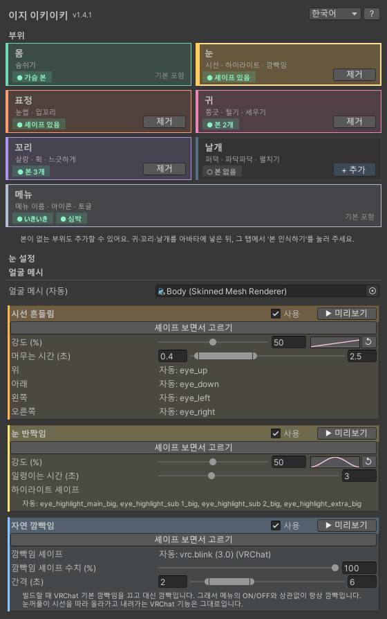
부위 카드와 "눈" 설정. 부위마다 색이 다르고, "메뉴" 카드에는 들어 있는 모듈(여기서는 "심박")의 불이 붙어요.
카드 왼쪽 아래에는 아바타에서 찾은 것(본 2개, 셰이프 있음 등)이 표시돼요. 찾지 못한 부위도 추가할 수 있고, 나중에 본 인식하기나 본 보면서 고르기로 지정하면 돼요.
몸 (숨쉬기)
가슴의 앞·위·옆이 부드럽게 부풀고 등 쪽은 움직이지 않아요. Modular Avatar로 입힌 의상도 가슴에 맞춰 움직여요. Humanoid 본을 움직이지 않아서 FBT(풀 바디 트래킹)나 게임 속 IK에서도 팔다리가 어긋나지 않고, 어떤 자세에서도 숨쉬어요.
강도 (%): 숨의 깊이 (최대 200%. 150%를 넘으면 옷이 찢어져 보일 수 있어서 경고가 나와요). 오른쪽 그래프로 숨 한 번의 모양(들숨·날숨)을 바꿀 수 있고, ↺로 되돌려요.
숨쉬는 범위: "전체적으로"~"윗가슴만". 가슴이 큰 아바타는 "윗가슴만"으로 두면 윗가슴 앞쪽만 들썩이고, 가슴(Breast)과 그 아래, 등은 거의 움직이지 않아요 (빌드할 때 가슴 웨이트를 위치에 따라 나눠요. 원본 메쉬는 바꾸지 않아요). 움직이는 곳은 아래 움직이는 본 보면서 고르기에서 색으로 확인할 수 있어요.
한 번 숨쉬는 시간 (초)와 속도 흔들림 (%): 숨 쉬는 속도와 그 흔들림.
기본 대기 움직임 끄기 (기본 켜짐): Additive 레이어를 따로 설정하지 않은 아바타는 게임 안에서 VRChat 기본 대기 애니메이션 때문에 팔과 가슴이 흔들려요 (Gesture Manager에서는 안 보여요). 켜 두면 이 흔들림을 없애고 숨쉬기만 남겨요.
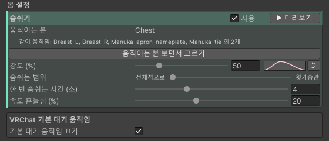
"몸" 탭의 숨쉬기 설정. 같이 움직임에 가슴과 같이 움직이는 본이 나와요.
움직이는 본 보면서 고르기
숨쉬기 설정의 움직이는 본 보면서 고르기를 누르면, 숨쉴 때 움직이는 곳이 아바타 위에 민트색으로 보여요(색이 진할수록 많이 움직여요). 오른쪽 목록에는 가슴에 붙은 본(가슴·날개·장식 등)과 움직이는 메쉬가 나와요.
체크를 끄거나 점을 누르면 그 본(과 아래 본)은 숨쉴 때 가만히 있어요. 예를 들어 날개가 숨쉬기를 따라 움직이는 게 싫으면 날개 본을 끄면 돼요. 바꾼 내용은 바로 컴포넌트에 저장되고, Ctrl+Z로 되돌릴 수 있어요.
날개(Wing_Root)를 끈 모습. 끈 본은 회색으로 보여요.
눈
얼굴 메시는 자동으로 찾아요(얼굴 메시 (자동)). 다른 메시를 쓸 때만 지정해 주세요.
시선 흔들림
가끔 시선이 움직였다가 잠깐 머물고 돌아와요. 머무는 시간 (초)으로 머무는 시간의 범위를 정해요. 위·아래·왼쪽·오른쪽 셰이프는 자동으로 찾고, 다르면 셰이프 보면서 고르기로 다시 고를 수 있어요.
눈 반짝임
눈 하이라이트가 천천히 커지거나 반짝여요.
자연 깜빡임
빌드할 때 VRChat 기본 깜빡임을 끄고, 대신 랜덤한 깜빡임(보통·두 번·천천히 등)을 해요. 눈이 위아래를 볼 때 눈꺼풀이 따라오는 VRChat 기능은 그대로예요.
깜빡임 셰이프 수치 (%): 눈을 감을 때 셰이프를 몇까지 올릴지예요 (기본 100%). 눈 셰이프를 따로 조정해 둔 아바타는 100%에서 눈이 지나치게 감기거나 모양이 무너질 수 있어요. 미리보기를 보면서 눈이 딱 감기는 정도로 낮춰 주세요.
자체 깜빡임이 있는 아바타아바타가 자체 애니메이션으로 깜빡이면 이지 이키이키만 / 아바타 것만 / 둘 다 중에서 고르는 상자가 나와요. 나중에 "자연 깜빡임" 아래에서 언제든 바꿀 수 있어요.
표정
눈썹이 까딱 올라가거나 곤란한 모양이 되고, 입꼬리가 살짝 올라가요. 움직일 셰이프는 자동으로 찾고, 셰이프마다 움직일 셰이프 (최대 %) 슬라이더로 세기를 바꿀 수 있어요. 말하는 동안에는 입이 움직이지 않아요.
표정 중에는 쉬어요제스처나 FaceEmo 등으로 아바타 표정이 나오는 동안에는 시선·깜빡임·눈썹·입 움직임이 자동으로 멈추고, 표정이 돌아오면 다시 움직여요. 눈 감은 표정에서 눈꺼풀이 두 번 감기는 일도 없어요.
귀·꼬리·날개
귀는 쫑긋·털기·세우기, 꼬리는 살랑·휙·느긋하게, 날개는 퍼덕·파닥파닥·펼치기를 랜덤으로 섞어요. 왼쪽과 오른쪽 귀는 각자 다른 타이밍에 움직여요.
본은 이름(ear·耳·tail·しっぽ·wing·羽 등)으로 자동으로 찾아요. 의상이나 헤어로 나중에 붙인 귀·꼬리도 Modular Avatar로 붙는 위치를 생각해서 찾아요.
못 찾거나 틀리면 본 인식하기(다시 찾아서 정하기)나 본 보면서 고르기를 써 주세요.
따로 쓰는 귀·날개·꼬리(액세서리나 의상)는 그 오브젝트(또는 본)를 Hierarchy에서 본 인식하기 아래 칸에 끌어다 놓거나, Hierarchy에서 고른 뒤 Hierarchy에서 고른 걸로 지정을 누르면 그 안의 귀·날개·꼬리 본이 등록돼요. 몸 가운데에 있는 본을 넣으면 왼쪽·오른쪽으로 나눠서 등록해요.
아바타 기본 귀·꼬리·날개 움직임 끄기 (기본 켜짐): 아바타 자체 애니메이션이 귀나 꼬리를 움직이면, 그 움직임을 빼서 겹치지 않게 해요.
PhysBone이 있으면 빌드할 때 "Is Animated"를 자동으로 켜서, 움직임 위에 흔들림이 자연스럽게 더해져요.
내가 만든 애니메이션
처진 귀처럼 기본 움직임이 어울리지 않을 때는 직접 만든 애니메이션 클립을 넣을 수 있어요. 귀·꼬리·날개 탭의 내가 만든 애니메이션에서 + 클립 추가를 누르거나, 클립을 그 줄에 끌어다 놓으세요. 넣은 클립은 기본 움직임과 섞여서 랜덤한 타이밍에 재생되고, 강도 슬라이더도 적용돼요.
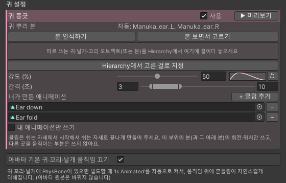
MANUKA 귀에 아바타에 들어 있는 "Ear down", "Ear fold"를 넣은 예. 위쪽 칸에는 따로 쓰는 귀를 끌어다 놓을 수 있어요.
내 애니메이션만 쓰기: 기본 움직임은 쓰지 않고 넣은 클립만 랜덤으로 재생해요.
꼬리는 내 애니메이션 확률로, 살랑 두 번마다 클립을 재생할 확률을 정해요. "내 애니메이션만 쓰기"를 켜면 대신 간격 (초)으로 클립 사이에 쉬는 시간을 정해요.
클립은 쉬는 자세에서 시작해서 쉬는 자세로 끝나게 만들어 주세요. 그 부위의 본(과 그 아래 본)의 회전·위치만 쓰고, 다른 곳을 움직이는 커브는 쓰지 않아요. 양쪽 귀를 같이 움직이는 클립은 왼쪽·오른쪽으로 나눠서 각자 다른 타이밍에 재생해요.
보면서 고르기
본 보면서 고르기
아바타 와이어프레임 위에 본이 점으로 표시돼요. 추천 본은 부위 색, 고른 본은 흰색이고 클릭으로 고르거나 뺄 수 있어요. 오른쪽 목록에서 이름으로 검색할 수도 있어요. 적용을 누르면 정해져요.
클릭하면 뿌리 본 고르기: 귀나 날개의 어디를 클릭해도 그 뿌리 본이 골라져요. 클릭한 본 자체를 고르려면 Shift+클릭.
반대쪽도 같이 고르기: 왼쪽을 고르면 오른쪽도 같이 골라져요 (꼬리에는 없어요).
고른 본과 같이 움직이는 아래 본은 흰 테두리 점과 굵은 흰 선으로 보이고, 목록에 ↳ 같이 움직임이라고 나와요. 아래 줄에 고른 개수와 같이 움직이는 본 개수가 나와서, 잘 골랐는지 확인할 수 있어요.
위쪽 칸(시선 흔들림·눈 반짝임·자연 깜빡임·표정)을 고르고 얼굴 썸네일에서 골라요. 마우스를 올리면 왼쪽 큰 미리보기에서 그 셰이프가 움직여요. 모든 셰이프 보기로 후보가 아닌 셰이프도 볼 수 있어요. 적용을 누르면 모든 칸이 한 번에 저장되고, 고르지 않은 칸은 자동 그대로예요.
둘러보는 셰이프가 없고 눈 본이 있는 아바타(마론 등)는 시선 칸에 자동: 눈 본으로 움직임이라고 나오고, 눈 본으로 시선을 움직여요.
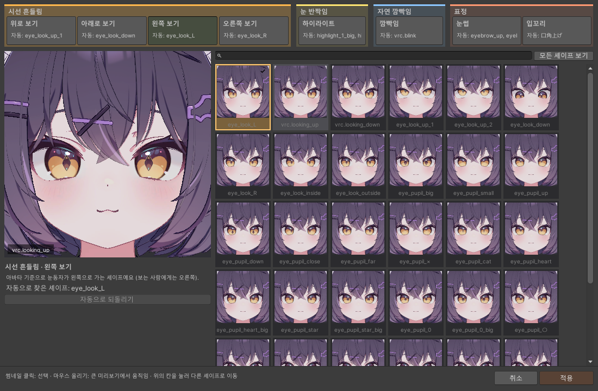
메뉴
Expression 메뉴에 いきいき 서브메뉴가 생겨요(이름은 메뉴 이름에서 변경). 안에는 전체 ON/OFF와 부위별 ON/OFF(숨쉬기·귀·꼬리·날개·눈·표정)가 들어가요. 선택은 저장·동기화돼요.
"메뉴" 탭 아래쪽의 설명서 열기를 누르면 인스펙터 언어(日本語 / 한국어 / English)로 이 설명서가 브라우저에서 열려요. 그 아래 문의할 때에서는 진단 정보를 보낼 수 있어요(잘 안 될 때).
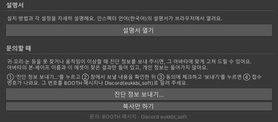
"메뉴" 탭 아래쪽.
모듈
이지 이키이키는 본체만으로 모든 부위가 움직여요. 모듈은 나중에 기능을 더하는 별매 추가 파츠예요. 지금은 심박 모듈이 있어요.
구매와 설치
イージーいきいき 本体(400円): 본체만이에요.
心拍モジュール（本体をお持ちの方向け）(150円): 본체를 v1.3.0 이상으로 업데이트한 뒤, 모듈 unitypackage를 임포트해요. 설정은 그대로 이어져요.
本体＋心拍モジュール セット(500円): 처음 사는 분용이에요. 임포트하면 둘 다 들어가요.
들어갔는지 확인하기
"메뉴" 카드 옆에 모듈별 불이 붙어요.
● 초록: 설치되어 사용 중
● 회색: 설치했지만 꺼 둠
● 빨강: 설치 안 됨
모듈 목록 (메뉴 탭)
"메뉴" 탭의 모듈 목록을 펼치면 모듈마다 설명이 나와요. 설치된 모듈은 이 모듈 사용으로 켜고 끌 수 있어요(끄면 빌드에 안 들어가지만 설정은 남아요). 설정이 있는 탭으로 가는 버튼과, 그 모듈만의 항목(심박 모듈은 심박 앱 신호 확인)도 여기 있어요. 설치 안 된 모듈에는 가격과 BOOTH 버튼이 나와요.
각 탭의 "모듈" 칸
"몸"·"눈"·"표정"·"귀"·"꼬리"·"날개" 탭 맨 아래에 모듈 칸이 있어요. 설치되어 있으면 그 부위의 설정(심박 모듈은 "몸"에 심박 호흡, "표정"에 심박 홍조), 설치 안 됐으면 메뉴에서 확인하기, 꺼 뒀으면 켜기 버튼이 나와요.
Pulsoid, HypeRate 같은 심박 앱과 연동해서, 심박이 오르면 숨 쉬는 횟수가 늘고 한 번의 숨은 얕아지고, 볼이 서서히 붉어져요. 진정되면 천천히 원래대로 돌아와요.
할 수 있는 것
심박 호흡("몸" 탭): 심박이 오를수록 숨이 빠르고 얕아져요. 빠르기는 심박에 맞춰 조금씩 바뀌고, 중간에 갑자기 바뀌지 않아요.
심박 홍조("표정" 탭): 정한 심박부터 볼이 붉어지기 시작해서, 빠른 심박에서 가장 진해져요.
심박은 약 0.5초마다 받고, 그 사이도 부드럽게 이어져서 숨이나 홍조가 툭툭 끊기지 않아요.
심박 파라미터가 없는 아바타에는 아무것도 만들지 않아요 (동기화 비트도 늘지 않아요).
준비물
심박계(스마트워치, 가슴 벨트 등)와, 심박을 VRChat에 OSC로 보내는 앱(Pulsoid, HypeRate, 블루투스 심박 앱, HRtoVRChat_OSC, VRCOSC 등).
앱의 아바타용 프리팹은 없어도 돼요. 아래 "신호에 맞춰 자동 설정"으로 필요한 파라미터를 만들 수 있어요.
1. 앱 신호 확인하기
심박 앱의 OSC 보내기를 켜고, VRChat은 꺼 둬요 (VRChat이 켜져 있으면 신호를 받을 수 없어요).
"메뉴" 탭의 모듈 목록을 열고, 심박 모듈의 심박 앱 신호 확인에서 받기 시작을 눌러요.
앱이 보내는 파라미터 이름, 값, 추측한 형식이 아래에 나와요.
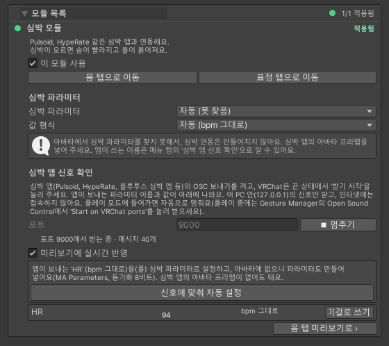
아직 설정하지 않은 상태. 아바타에 심박 파라미터가 없어서 "못 찾음"이 뜨고, 앱에서 받은 "HR"이 아래에 나와 있어요.
2. 신호에 맞춰 자동 설정
신호에 맞춰 자동 설정을 누르면, 가장 알맞은 신호(아바타에 있는 것 → bpm 정수 → 가장 많이 받은 것 순)로 심박 파라미터와 값 형식을 맞춰요. 아바타에 그 파라미터가 없으면 "Easy Ikiiki Heart Parameter" 오브젝트에 MA Parameters로 만들어 넣어요. 다른 신호를 쓰고 싶으면 그 줄의 이걸로 쓰기를 눌러 주세요.
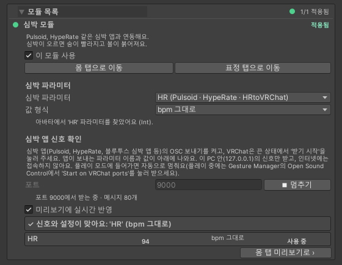
"신호와 설정이 맞아요"가 뜨면 준비 끝이에요.
값 형식: bpm 그대로(70이면 70), 0~1 (0~255 bpm), -1~1 (0~255 bpm) 세 가지예요. 자동 설정이면 앱에 맞춰 골라져요. 맞지 않으면 경고와 받은 형식으로 맞추기 버튼이 나와요.
동기화 비트: 앱의 아바타용 프리팹 파라미터를 읽을 때는 늘지 않아요. 자동 설정으로 파라미터를 만들었으면 8비트(동기화, 저장 안 함)를 써요.
받는 동안 미리보기에 실시간 반영을 켜면 "몸"·"표정" 탭 미리보기가 실제 심박에 맞춰 움직여요.
3. 심박 호흡 ("몸" 탭)
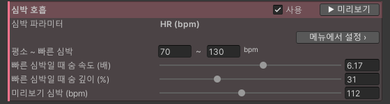
"몸" 탭 맨 아래 "모듈" 칸.
평소 ~ 빠른 심박: 이 범위에서 숨이 바뀌어요(기본 70~130 bpm). 평소 심박에서는 원래 숨, 빠른 심박에서는 아래 설정이 돼요.
빠른 심박일 때 숨 속도 (배): 평소보다 몇 배 빨리 숨쉴지 (1~10배).
빠른 심박일 때 숨 깊이 (%): 100%면 평소와 같은 깊이, 낮출수록 얕고 짧은 숨이 돼요.
미리보기 심박 (bpm): 심박계가 없어도 이 값으로 움직임을 확인할 수 있어요 (게임에서는 안 써요).
4. 심박 홍조 ("표정" 탭)
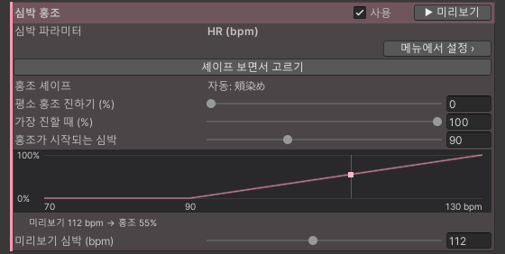
"표정" 탭 맨 아래 "모듈" 칸. 그래프로 심박마다 홍조 진하기를 볼 수 있어요.
홍조 셰이프: 자동으로 볼 홍조 같은 셰이프를 찾아요. 바꿀 때는 셰이프 보면서 고르기에서 골라요.
평소 홍조 진하기 (%): 붉어지기 전의 진하기 (기본 0%).
가장 진할 때 (%): 빠른 심박일 때의 진하기 (기본 100%).
홍조가 시작되는 심박: 이 심박부터 붉어지기 시작해서 빠른 심박에서 가장 진해져요 (기본 90 bpm).
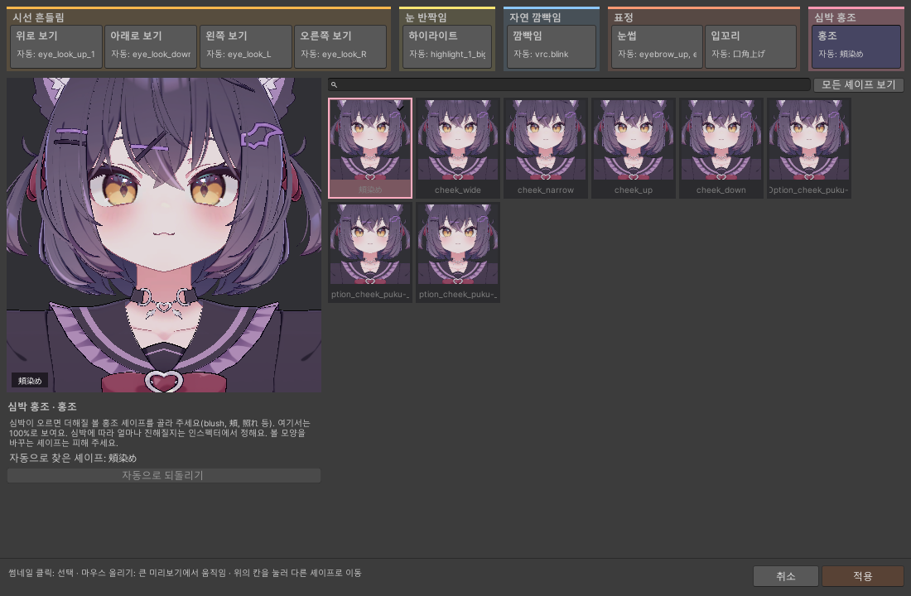
셰이프 보면서 고르기의 "심박 홍조" 칸. 홍조는 가장 진한 상태(100%)로 보여요.
홍조가 천천히 진해지는 원리많은 아바타의 볼 홍조 셰이프는 머리 안에 있는 홍조 판을 겉으로 꺼내는 방식이라, 중간 값에서는 판이 얼굴을 뚫고 나와 보여요. 그런 홍조는 빌드할 때 판만 꺼내서 머티리얼 투명도로 천천히 진하게 해요 (lilToon만. 아바타의 머티리얼은 바꾸지 않아요).
플레이 모드에서 테스트
신호 확인은 플레이 모드에 들어가면 자동으로 멈춰요. Gesture Manager로 테스트할 때는 Gesture Manager의 Open Sound Control에서 Start on VRChat ports를 누르면 플레이 중에도 앱의 심박으로 움직여요.
안전신호 확인은 이 PC 안(127.0.0.1)의 신호만, 받기 시작을 눌렀을 때만 받아요. 인터넷에는 연결하지 않아요. 모듈은 "메뉴" 탭의 이 모듈 사용으로 끌 수 있고, 설정은 남아요.
동작 방식
전부 랜덤: 다음 움직임까지의 시간, 움직임 크기, 시선 방향, 깜빡임 종류가 매번 그 자리에서 정해져요. 보는 사람마다 각자의 화면에서 자연스럽게 달라져요.
비파괴: 업로드할 때 NDMF가 FX 레이어 등을 만들고, 설정용 컴포넌트는 지워요. 아바타 원본 파일은 바꾸지 않아요. 프리팹을 지우면 원래대로예요.
표정 기믹과 함께: 얼굴 레이어는 FX 맨 마지막에 들어가서 FaceEmo 등에 덮이지 않아요.
Write Defaults ON / OFF 어느 아바타에서도 움직여요.
자주 묻는 질문
업데이트했는데 바뀌지 않아요
새 unitypackage를 임포트하면 덮어써져요. 인스펙터 제목 옆의 버전(예: v1.4.1)이 그대로라면 Assets/Eukkbi_Soft/Easy_Ikiiki_Asset 폴더를 지운 뒤 다시 임포트해 주세요. 아바타에 해 둔 이지 이키이키 설정은 그대로 남아요.
귀·꼬리·날개를 못 찾아요
부위 설정에서 본 보면서 고르기를 열고 뿌리 본을 클릭한 뒤 적용해 주세요. 그래도 안 움직이면 아래 진단 도구로 정보를 보내 주세요.
시선이 반대로 가거나 다른 표정이 돼요
"눈"의 셰이프 보면서 고르기에서 위·아래·왼쪽·오른쪽에 맞는 셰이프를 다시 골라 주세요. 왼쪽·오른쪽은 아바타 기준이에요.
두 번 깜빡여요
아바타 자체 깜빡임과 겹친 거예요. "자연 깜빡임" 아래 선택에서 이지 이키이키만이나 아바타 것만을 골라 주세요.
가슴이 큰 아바타에서 가슴이 너무 움직여요
"몸"의 숨쉬는 범위을 "윗가슴만"으로 옮겨 주세요. 윗가슴 앞쪽만 숨쉬고, 가슴은 거의 움직이지 않게 돼요.
심박 연동이 안 돼요
심박 연동은 심박 모듈(별매)의 기능이에요("메뉴" 카드의 "심박" 불이 빨강이면 아직 안 넣은 거예요). "메뉴" 탭 심박 모듈의 심박 앱 신호 확인으로 신호가 들어오는지 보고, 신호에 맞춰 자동 설정을 눌러 주세요. 아무것도 안 들어오면 앱의 OSC 보내기가 켜져 있는지, 포트가 9000인지, VRChat을 껐는지 확인해 주세요.
FBT(풀 바디 트래킹)에서도 작동하나요
네. 숨쉬기는 Humanoid 본을 움직이지 않고 가슴 본 아래에 추가한 전용 본을 부풀리기 때문에, 트래커로 정해진 자세 그대로 숨쉬어요. 데스크톱·VR에서도 똑같이 작동해요.
페이스 트래킹을 써요
트래킹 중에는 게임 안 메뉴에서 "눈"과 "표정"을 꺼 주세요. 늘 쓴다면 그 부위를 빼도 돼요. VRChat 기본 아이 트래킹으로 눈꺼풀을 움직이는 경우에는 "자연 깜빡임"의 사용을 꺼 주세요.
Unity에서는 괜찮은데 게임에서 움직임이 달라요
VRChat 기본 대기 애니메이션은 게임 안에서만 재생돼요. 기본 대기 움직임 끄기를 켜 주세요.
빼고 싶어요
아바타 안의 Easy_Ikiiki_Asset을 지우기만 하면 돼요. 아바타 원본 파일은 바뀌지 않았어요.
귀·꼬리·눈 등을 못 찾거나 움직임이 이상하면 진단 정보를 보내 주세요. 그 아바타에 맞게 고쳐 드릴게요. 아바타의 본·셰이프 이름과 이 에셋이 찾은 결과만 들어 있고, 개인 정보는 들어가지 않아요.
"메뉴" 부위 맨 아래 문의할 때의 진단 정보 보내기…를 눌러요.
열린 창에서 보낼 내용을 확인하고, 동의에 체크한 뒤 보내기를 눌러요. 동의하고 눌렀을 때만 보내지고, 저절로 보내지는 일은 없어요.
나온 접수 번호를 BOOTH 메시지나 Discord(eukkbi_soft)로 알려 주세요.
보내기는 함께 들어 있는 Eukkbi_Soft 아바타 진단 도구(Assets/Eukkbi_Soft/Avatar_Diagnostics)가 맡아요. 이지 이키이키 자체에는 통신 기능이 없어요. 이 폴더를 지웠다면 BOOTH에서 무료로 다시 받을 수 있어요.
보내기 싫으면 복사만 하기로 내용을 복사해서 메시지에 붙여 넣어 주세요.
업데이트 이력
v1.4.1 (2026/11/17) 인스펙터 제목 옆에 버전 표시 (업데이트해도 숫자가 그대로일 때의 방법은 "자주 묻는 질문"에)
v1.4.0 (2026/11/17) 귀·꼬리·날개에 직접 만든 애니메이션을 넣으면 랜덤 타이밍·크기로 재생 ("내 애니메이션만 쓰기"도 가능) · 본 보면서 고르기: 클릭하면 뿌리 본을 고르고 반대쪽도 같이 선택, 같이 움직이는 본 표시 · 따로 쓰는 귀·날개·꼬리는 Hierarchy에서 끌어다 놓거나 골라서 "Hierarchy에서 고른 걸로 지정" · 날개 뿌리에서 깃털이 좌우로 퍼진 아바타에서 깃털 하나씩 골라지던 문제 수정 · 일부 아바타에서 미리보기가 얼굴 대신 가슴을 비추던 문제 수정
v1.3.2 (2026/11/17) "메뉴" 탭에 "설명서 열기" 버튼 추가 (인스펙터 언어의 설명서가 열려요)
심박 모듈 v1.0.1 (2026/11/17) 심박이 오를 때 호흡이 중간에 갑자기 빨라지지 않고, 심박에 맞춰 자연스럽게 빨라지도록 수정
v1.3.1 (2026/11/16) 시선 (눈): 둘러보는 셰이프가 없는 아바타(마론 등)는 눈 본으로 시선을 움직이도록 · "笑い"(눈 모프)를 입 셰이프로 잘못 고르지 않도록 수정
v1.3.0 (2026/11/16) 심박 모듈(별매: 모듈만 150円 / 본체 세트 500円) 지원. Pulsoid·HypeRate 등과 연동해 심박이 오르면 숨 쉬는 횟수가 늘고 얕아지고 볼이 붉어져요. "메뉴" 카드에 모듈별 불(미적용 빨강, 적용 초록), "메뉴" 탭에 모듈 목록, 각 부위 탭에 "모듈" 칸 추가. 심박 앱 신호 확인과 자동 설정, 홍조 투명도 페이드, 모듈 켜기/끄기 지원. 본체 기능은 그대로예요
v1.2.1 (2026/11/16) 자연 깜빡임 셰이프 수치(%)를 조절할 수 있게 (눈 셰이프를 조정해 둔 아바타용) · 귀/꼬리 인식에서 EditorOnly 메쉬 제외 · FBT 지원 명시
v1.2.0 (2026/11/15) 숨쉬는 범위 (몸): "전체적으로"~"윗가슴만"을 고를 수 있게. 가슴이 큰 아바타는 "윗가슴만"으로 두면 윗가슴만 숨쉬어요 · 숨쉬기 강도 최대 200% (150% 넘으면 경고)
v1.1.0 (2026/11/15) 움직이는 본 보면서 고르기 (몸): 숨쉴 때 움직이는 본과 메쉬를 색으로 보여 주고, 가슴에 붙은 본(날개·장식 등)마다 같이 움직일지 고를 수 있게 · 인스펙터에서 진단 정보 보내기 (진단 도구 포함)
v1.0.1 (2026/11/15) 셰이프 보면서 고르기: 고른 셰이프가 맨 앞으로 이동하지 않도록 수정
v1.0.0 (2026/11/15) 공개
문의
BOOTH 메시지 / Discordeukkbi_soft
EASY IKIIKI
Drop it in, and your avatar starts to breathe.
An idle-motion gimmick: soft breathing from the chest, with gaze, blinks, brows and mouth, ears, tail and wings moving at random.
Add Modular Avatar to the project with VCC (VRChat Creator Companion); NDMF comes with it.
Drag the unitypackage into Unity to import it. You get Assets/Eukkbi_Soft/Easy_Ikiiki_Asset.
Put Easy_Ikiiki_Asset.prefab inside your avatar in the Hierarchy. Anywhere inside the avatar works.
Choose parts in the inspector and upload. No Setup Outfit needed.
TipPress ? at the top right for a note on every setting. The menu next to it switches the inspector between 日本語 / 한국어 / English.
Parts
The inspector starts with a row of part cards. Body (breathing) and Menu are always in; add other parts with Add on their card and take them out with Remove. Clicking a card shows that part's settings below.
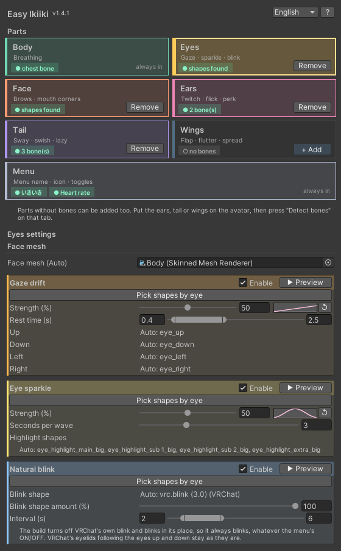
Part cards and the Eyes settings. Each part has its own colour, and the Menu card carries a light for each installed module (here "Heart rate").
The bottom left of each card shows what was found on the avatar (2 bone(s), shapes found and so on). Parts that weren't found can still be added; set them later with Detect bones or Pick by eye.
Body (breathing)
The front, top and sides of the chest rise softly while the back stays still, and outfits added with Modular Avatar move along. No humanoid bone is moved, so in FBT (full-body tracking) and in-game IK your arms and legs stay put, and it breathes in any pose.
Strength (%): how deep each breath is (up to 200%; past 150% the outfit can look torn, and a warning shows). The graph beside it shapes one breath (in and out); ↺ resets it.
Breathing area: Whole chest to Upper chest only. On a large bust, "Upper chest only" lifts just the upper front of the chest, while the bust, the ribs below it and the back hardly move (the build splits the chest's weights by place; your mesh files are not changed). Pick moving bones by eye below shows in colour what moves.
Seconds per breath and Pace variation (%): the pace and how much it wanders.
Turn off the default idle sway (on by default): avatars without their own Additive layer get VRChat's default idle in game, which sways the arms and chest (Gesture Manager doesn't show it). This stops it so only the breathing remains.
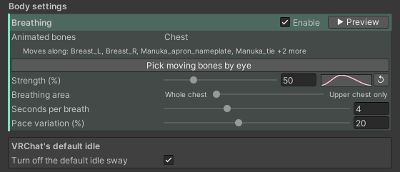
The breathing settings on the Body tab. Moves along lists the bones that move with the chest.
Pick moving bones by eye
Press Pick moving bones by eye in the breathing settings to see what breathing moves, coloured mint on the avatar (the deeper the colour, the more it moves). The list on the right shows the bones on the chest (breasts, wings, accessories) and the meshes that move.
Untick a bone or click its dot and it (with the bones under it) stays still while breathing. If the wings riding along with each breath bother you, for example, untick the wing bone. Changes are saved to the component right away and can be undone with Ctrl+Z.
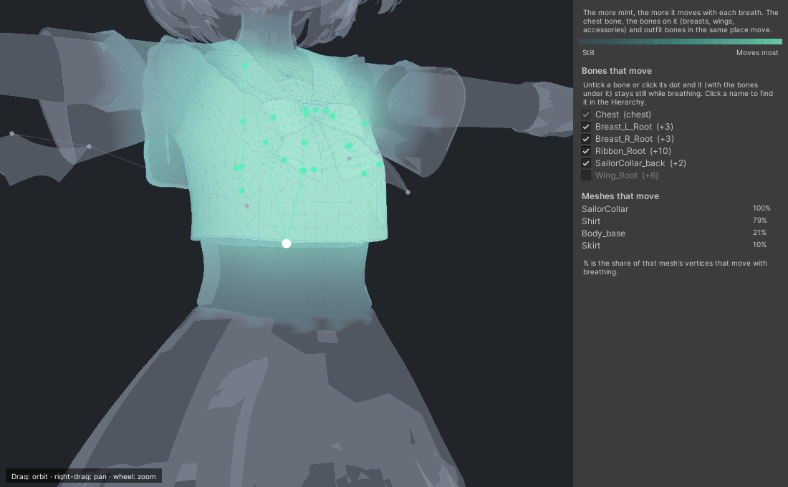
With the wings (Wing_Root) unticked. Unticked bones turn grey.
Eyes
The face mesh is found automatically (Face mesh (Auto)); set it only to use another mesh.
Gaze drift
Now and then the eyes glance somewhere, rest a moment and come back. Rest time (s) sets how long they rest. The up, down, left and right shapes are found for you; if they're wrong, pick them again with Pick shapes by eye.
Eye sparkle
The eye highlights slowly grow and shimmer.
Natural blink
The build turns off VRChat's own blink and blinks at random in its place (single, double, slow and so on). VRChat's eyelids following the eyes up and down stay as they are.
Blink shape amount (%): how far the shape goes when the eyes close (100% by default). On an avatar whose eye shapes were adjusted, 100% can over-close the eyes or bend their shape: watch the preview and lower it until the eyes just close.
Avatars that blink by themselvesIf the avatar's own animation blinks, a box asks you to choose Easy Ikiiki only, The avatar's only or Both. You can change it any time under Natural blink.
Face
The brows lift or turn troubled now and then, and the mouth corners rise a little. The shapes are found for you, and each has a Shapes to move (max %) slider. The mouth waits while you talk.
Rests during expressionsWhile your avatar shows an expression (gestures, FaceEmo and so on), gaze, blinks, brows and mouth pause, and resume when it ends. Eyelids never close twice over a closed-eye expression.
Ears, tail, wings
Ears twitch, flick and perk up; the tail sways, swishes and wags lazily; wings flap, flutter and spread, all mixed at random. Left and right ears move on their own timing.
Bones are found by name (ear, 耳, tail, しっぽ, wing, 羽 and so on), including ears and tails added later with outfits or hair, where Modular Avatar will put them.
If they're missing or wrong, use Detect bones (search again and keep the result) or Pick by eye.
Ears, wings or a tail you wear separately (an accessory or outfit): drop the object (or its bones) from the Hierarchy onto the box under Detect bones, or select it in the Hierarchy and press Use the Hierarchy selection, and the ear, wing or tail bones inside it are set. A bone on the middle of the body is split into its left and right sides.
Turn off the avatar's own ear, tail and wing motion (on by default): if the avatar's own animations move its ears or tail, that motion is taken off so the two don't stack.
With PhysBones on them, the build turns on "Is Animated", so the physics adds natural follow-through.
Your own animations
When the built-in moves don't suit, say on droopy ears, add animation clips you made. On the Ears, Tail and Wings tabs, press + Add clip under Your own animations, or drop clips on that row. Your clips mix in with the built-in moves at random times, and the strength slider applies to them too.
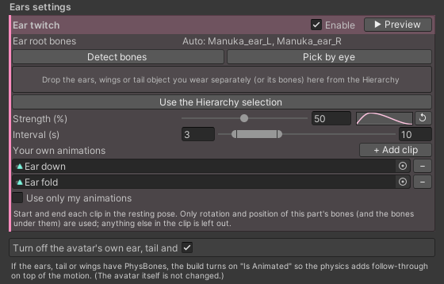
MANUKA's ears with the avatar's own "Ear down" and "Ear fold" clips. Ears you wear separately can be dropped on the box above.
Use only my animations: the built-in moves are left out and only your clips play, at random.
For the tail, Own animation chance sets how likely one of your clips plays after every two sways. With "Use only my animations" on, Interval (s) sets the wait between clips instead.
Start and end each clip in the resting pose. Only rotation and position of that part's bones (and the bones under them) are used; other curves in the clip are left out. A clip that moves both ears is split, and each side plays on its own timing.
Pick by eye
Pick bones by eye
Bones show as dots on a wireframe of your avatar: suggested ones in the part's colour, picked ones in white. Click to pick or drop a bone, or search by name in the list. Apply keeps the choice.
Clicking picks the root: click anywhere on an ear or wing and its root bone is picked. Shift-click picks exactly the bone you clicked.
Pick the other side too: picking the left one picks the right one as well (not for the tail).
Bones that move with your picks show as white-ringed dots joined by thick white lines, marked ↳ moves with it in the list. The bottom line counts your picks and the bones that move with them, so you can tell the choice is right.
You can also drop objects or bones from the Hierarchy onto the window, or press Use the Hierarchy selection.
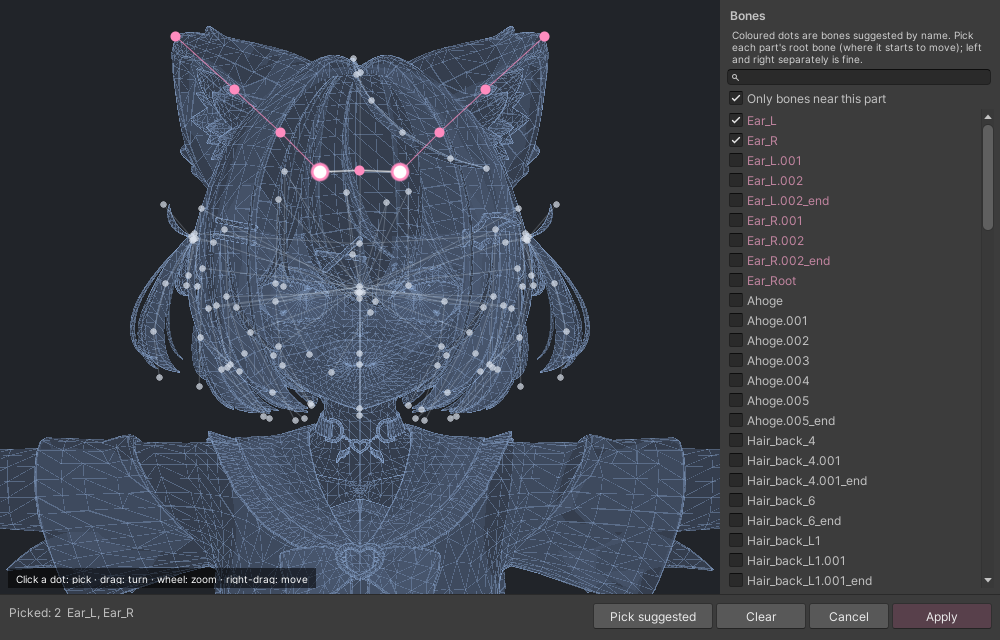
MANUKA's ears. With the roots Manuka_ear_L / R picked, the .001 bones beyond them show as moving with them.
Pick shapes by eye
Choose a slot at the top (gaze drift, eye sparkle, natural blink, face) and pick from face thumbnails. Hover one and it moves on the large preview. Show all shapes lists shapes beyond the suggestions. Apply saves every slot at once; slots you left alone stay automatic.
Avatars with eye bones but no look shapes (Marron, for example) show Auto: eye bones in the gaze slots, and the gaze moves the eye bones.
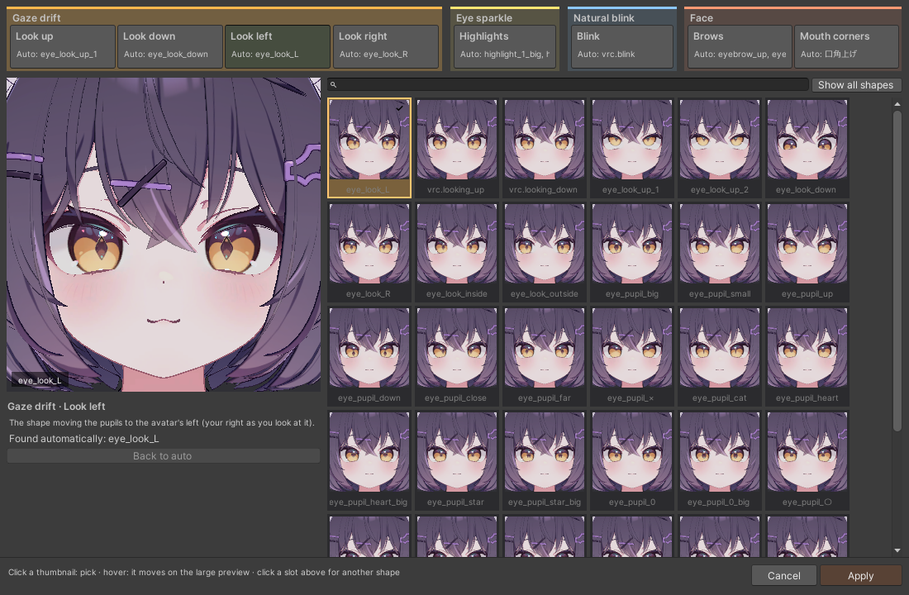
Menu
The Expression menu gets an いきいき submenu (rename it with Menu name) with an overall ON/OFF and one toggle per part (breathing, ears, tail, wings, eyes, face). Choices are saved and synced.
ON/OFFBreathEarsTailWingsEyesFace
Menu icon: left empty, the bundled icon is used.
On by default: whether it starts on after upload.
Per-feature toggles: off leaves only the overall ON/OFF, using 1 synced bit.
Synced parameters: shows the bits used (up to 7).
Opening this manual
Press Open the manual near the bottom of the Menu tab to open this manual in your browser, in the inspector's language (日本語 / 한국어 / English). Below it, Asking for help sends diagnostics (if something doesn't work).
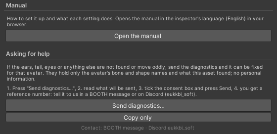
Near the bottom of the Menu tab.
Modules
Easy Ikiiki moves every part with the base alone. Modules are add-ons, sold separately, that bring extra features later. The first one is the heart-rate module.
Buying and installing
イージーいきいき 本体 (Base, 400 yen): the base only.
心拍モジュール（本体をお持ちの方向け） (Heart-rate module for base owners, 150 yen): update the base to v1.3.0 or later, then import the module's unitypackage. Your settings carry over.
本体＋心拍モジュール セット (Base + heart-rate module set, 500 yen): for new buyers; one import brings both.
Checking it's installed
The Menu card gets a light per module:
● Green: installed and on
● Grey: installed, switched off
● Red: not installed
Module list (Menu tab)
Open Module list on the Menu tab for what each module does. An installed module can be switched on and off with Use this module (off leaves it out of the build; its settings stay). Buttons to the tabs with its settings and the module's own items (for the heart-rate module, Check the heart-rate app's signal) are here too. A module that isn't installed shows its price and a BOOTH button.
The Modules section on each tab
The Body, Eyes, Face, Ears, Tail and Wings tabs end with a Modules section: an installed module's settings for that part (the heart-rate module adds Heart-rate breathing on Body and Heart-rate blush on Face), See in Menu when it isn't installed, or Turn on when it is switched off.
Heart-rate module (sold separately)
Heart-rate moduleSold separately ("心拍モジュール（本体をお持ちの方向け）" 150 yen, or "本体＋心拍モジュール セット" 500 yen). See Modules for buying, installing and switching it on and off.
Linked to a heart-rate app such as Pulsoid or HypeRate: as your heart rate rises, you breathe more often, each breath shallower, and the cheeks slowly blush. Calm down, and it eases back.
What it does
Heart-rate breathing (Body tab): the higher the heart rate, the quicker and shallower the breath. The pace follows the heart rate step by step, with no sudden jump.
Heart-rate blush (Face tab): the cheeks start to blush at a heart rate you choose and are strongest at the fast heart rate.
The heart rate arrives about every 0.5 s and is eased in between, so the breath and blush never jump.
Avatars without a heart-rate parameter get nothing built (and no synced bits).
What you need
A heart-rate monitor (smartwatch, chest strap…) and an app that sends it to VRChat over OSC (Pulsoid, HypeRate, a Bluetooth heart-rate app, HRtoVRChat_OSC, VRCOSC…).
The app's avatar prefab is optional: "Set up from the signal" below can add the parameter.
1. Check the app's signal
Turn on OSC output in the heart-rate app and close VRChat (the signal can't be received while VRChat is open).
On the Menu tab, open Module list and, under the heart-rate module's Check the heart-rate app's signal, press Start.
The parameter names the app sends, their values and the guessed format are listed below.
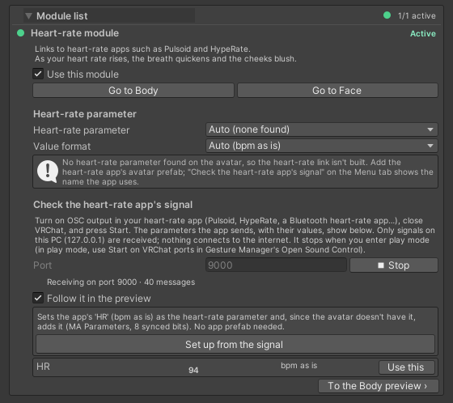
Before setting it up: the avatar has no heart-rate parameter ("none found"), and the app's "HR" is listed below.
2. Set up from the signal
Set up from the signal picks the likeliest signal (one on the avatar, then a whole bpm, then the one sent most) and sets the heart-rate parameter and the value format to match. If the avatar lacks that parameter, it is added with MA Parameters on an "Easy Ikiiki Heart Parameter" object. To use another signal, press Use this on its row.
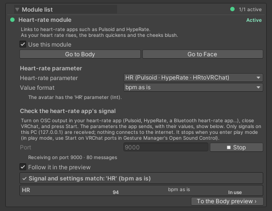
When it says "Signal and settings match", you are ready.
Value format: bpm as is (70 is 70), 0 to 1 (0-255 bpm) or -1 to 1 (0-255 bpm). Set up from the signal picks the app's. When it doesn't match, a warning and Match what's received appear.
Synced bits: none extra when reading the app prefab's parameter; 8 bits (synced, not saved) when the setup added the parameter.
While receiving, Follow it in the preview makes the Body and Face previews follow your real heart rate.
3. Heart-rate breathing (Body tab)
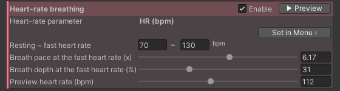
The Modules section at the bottom of the Body tab.
Resting ~ fast heart rate: the range the breath changes over (default 70-130 bpm): the usual breath at rest, the settings below at the fast rate.
Breath pace at the fast heart rate (x): how many times faster than usual (1-10x).
Breath depth at the fast heart rate (%): 100% is the usual depth; lower is shallower, quicker breaths.
Preview heart rate (bpm): try the motion without a monitor (not used in game).
4. Heart-rate blush (Face tab)
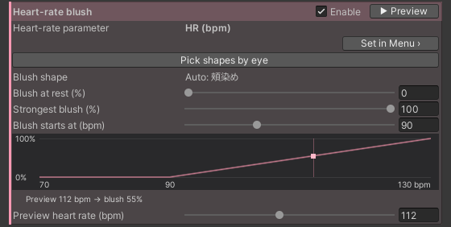
The Modules section at the bottom of the Face tab. The graph shows the blush at each heart rate.
Blush shape: a blush shape is found automatically; to change it, use Pick shapes by eye.
Blush at rest (%): the blush before it starts rising (default 0%).
Strongest blush (%): the blush at the fast heart rate (default 100%).
Blush starts at (bpm): it starts rising here and is strongest at the fast heart rate (default 90 bpm).
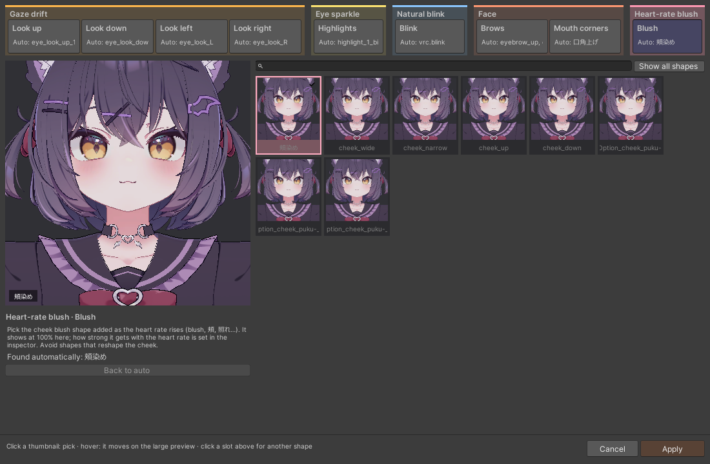
The heart-rate blush slot of Pick shapes by eye. The blush is shown at its strongest (100%).
How the blush fades inMany avatars' blush shapes push a blush panel out from inside the head, so at partial values the panel shows through the face. For those, the build takes just the panel and fades it in by material transparency (lilToon only; the avatar's own materials are not changed).
Testing in play mode
The signal check stops when you enter play mode. To test with Gesture Manager, press Start on VRChat ports in Gesture Manager's Open Sound Control, and the app's heart rate drives it during play.
SafetyThe signal check only receives on this PC (127.0.0.1), and only after you press Start. It never connects to the internet. The module can be switched off with Use this module on the Menu tab; its settings are kept.
How it works
All random: the wait before each move, its size, the gaze direction and the kind of blink are decided on the spot every time, and differently on each viewer's screen.
Non-destructive: at upload, NDMF builds the FX layers and removes the settings component. Your avatar's own files are never changed; delete the prefab and everything is back.
Gets along with face gimmicks: the face layers go last in FX, so FaceEmo and similar don't cover them.
Works on avatars with Write Defaults ON or OFF.
FAQ
I updated but nothing changed
Importing the new unitypackage overwrites the old files. If the version beside the inspector title (e.g. v1.4.1) hasn't changed, delete the Assets/Eukkbi_Soft/Easy_Ikiiki_Asset folder and import again. The Easy Ikiiki settings on your avatars are kept.
The ears, tail or wings aren't found
Open Pick by eye in that part's settings, click the root bone and press Apply. If it still doesn't move, send us details with the diagnostics tool below.
The gaze goes the wrong way or makes another face
Pick the right up, down, left and right shapes again with Pick shapes by eye under Eyes. Left and right are the avatar's.
It blinks twice
The avatar's own blink overlaps. Choose Easy Ikiiki only or The avatar's only under Natural blink.
On a large bust, the breasts move too much
Slide Breathing area under Body to "Upper chest only": just the upper front of the chest breathes then, and the bust hardly moves.
The heart-rate link doesn't work
The link comes with the heart-rate module, sold separately (a red "Heart rate" light on the Menu card means it isn't added). In the heart-rate module on the Menu tab, use Check the heart-rate app's signal to see whether the signal arrives, then press Set up from the signal. If nothing arrives, check that OSC output is on in the app, the port is 9000 and VRChat is closed.
Does it work with FBT (full-body tracking)?
Yes. Breathing moves no humanoid bone: it swells a bone of its own added under the chest, so it breathes in whatever pose your trackers set. Desktop and VR work the same way.
I use face tracking
Turn "Eyes" and "Face" off in the in-game menu while tracking, or leave those parts out if you always track. If VRChat's own eye tracking moves your eyelids, untick Enable on Natural blink.
It looks fine in Unity but moves differently in game
VRChat's default idle plays only in game. Turn on Turn off the default idle sway.
How do I remove it?
Delete Easy_Ikiiki_Asset from your avatar. Your avatar's own files were never changed.
If the ears, tail, eyes or anything else are not found or move oddly, send us the diagnostics and we'll fit it to your avatar. They hold only the avatar's bone and shape names and what this asset found; no personal information.
At the bottom of the Menu part, under Asking for help, press Send diagnostics….
Read what will be sent in the window that opens, tick the consent box and press Send. Nothing is sent until you do, and never on its own.
Tell us the reference number you get, in a BOOTH message or on Discord (eukkbi_soft).
The sending is done by the bundled Eukkbi_Soft Avatar Diagnostics tool (Assets/Eukkbi_Soft/Avatar_Diagnostics); Easy Ikiiki itself has no network code. Deleted that folder? Get it again for free on BOOTH.
Rather not send it? Use Copy only and paste the text in your message.
Update history
v1.4.1 (2026/11/17) The version shows beside the inspector title (if it doesn't change after an update, see the FAQ)
v1.4.0 (2026/11/17) Your own animations for ears, tail and wings play at random timing and size ("Use only my animations" too) · Pick bones by eye: a click picks the root and the other side, and the bones that move along are shown · ears, wings or a tail worn separately: drop them from the Hierarchy, or select them and press "Use the Hierarchy selection" · wings whose feathers fan out from the base no longer get single feathers picked · previews no longer frame the chest instead of the face on some avatars
v1.3.2 (2026/11/17) "Open the manual" button on the Menu tab (opens the manual in the inspector's language)
Heart-rate module v1.0.1 (2026/11/17) As the heart rate rises, breathing now speeds up evenly with it instead of jumping near the top
v1.3.1 (2026/11/16) Gaze (Eyes): avatars without look shapes (such as Marron) now look around with their eye bones; the "笑い" eye morph is no longer taken for a mouth shape
v1.3.0 (2026/11/16) Supports the heart-rate module (sold separately: module only 150 yen / set with the base 500 yen): with Pulsoid, HypeRate and the like, you breathe faster and shallower and the cheeks blush as your heart rate rises. A light per module on the Menu card (red until added, green when active), a module list on the Menu tab, and a Modules section on every part tab. Heart-rate app signal check with one-click setup, blush that fades in by transparency, and a switch to turn modules off. The base is unchanged
v1.2.1 (2026/11/16) Blink shape amount (%) for natural blinks (for avatars with adjusted eye shapes); ear and tail detection skips EditorOnly meshes; FBT support noted
v1.2.0 (2026/11/15) Breathing area (Body): choose Whole chest to Upper chest only; on a large bust, "Upper chest only" lets just the upper chest breathe; breathing strength up to 200% (warning past 150%)
v1.1.0 (2026/11/15) Pick moving bones by eye (Body): see the bones and meshes breathing moves, and choose which bones on the chest (wings, accessories) ride along; send diagnostics from the inspector (diagnostics tool bundled)
v1.0.1 (2026/11/15) Pick shapes by eye: a picked shape no longer jumps to the top